SKILL 00 / CLEAVE
命令 / Idle · 通过横扫震地

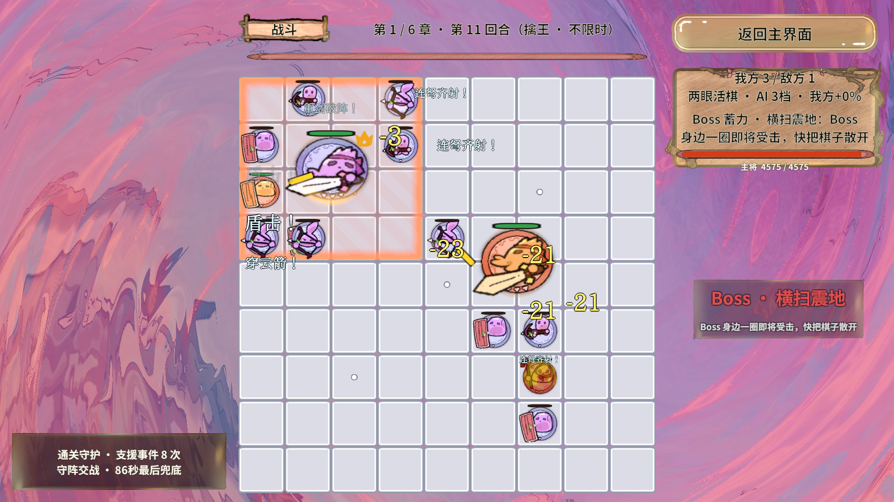
SAMPLE A点击放大 ↗
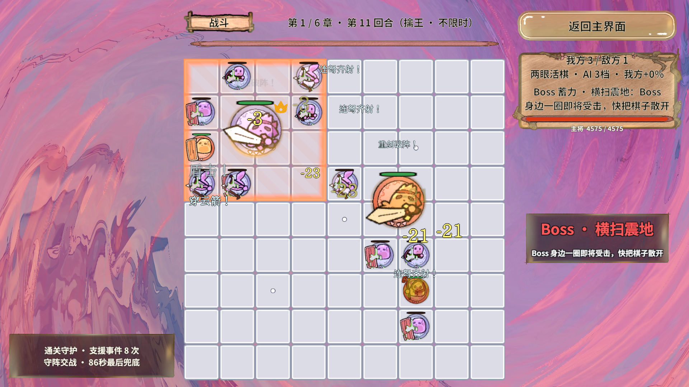
SAMPLE B点击放大 ↗在我方无敌的开发验收开关下，九个技能 GM 均成功进入施放流程并回到 Idle；Automation 1/1 完成、Unity Error 为 0，并保存 18 张 Game 截帧。上一轮失败与三招专项记录保留在下方历史章节。
最新一轮 Boss 技能 GM 施放
全部回到 Idle
Unity Game 固定帧采样
九招各两张 PNG
Automation Unity Error
1/1 迭代完成
本轮编辑器 P95（最大 106.70 ms）
性能阈值关闭，非性能通过结论
当前工作区重新执行九技能：90a554511c6c4d5ebc57777c50a1eb67，success=true，完成 1/1，失败 0，Unity Error 0。离线回归重新执行：182 个场景、4171 条断言通过；FairFeedbackBuffer 2794 条断言通过。P95 4.5 ms、最大帧 124.02 ms；性能阈值关闭，不作性能达标结论。
本轮在 Play 内存中订阅真实 BulletRing 命中事件，之后按游戏时间采样，没有直接派发假事件或修改伤害。一次命中事件后，四次采样均有 16 个启用子弹；同次采样的最小/最大径向距离差小于 0.00002 世界单位，支持同步径向扩散。
| 命中后时间 | 启用子弹 | 屏幕内中心点 | 径向距离范围 |
|---|---|---|---|
| 0.12 s | 16 | 13 | 3.641402–3.641403 |
| 0.30 s | 16 | 11 | 6.962434–6.962436 |
| 0.55 s | 16 | 4 | 11.58347–11.58347 |
| 0.88 s | 16 | 0 | 17.98931–17.98932 |
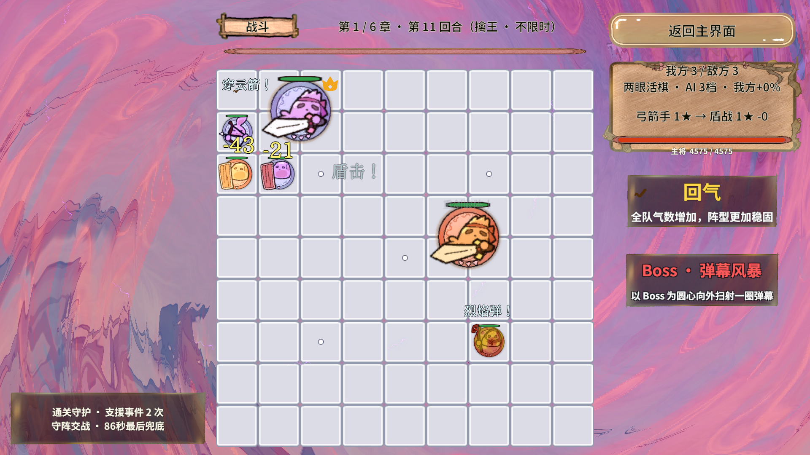
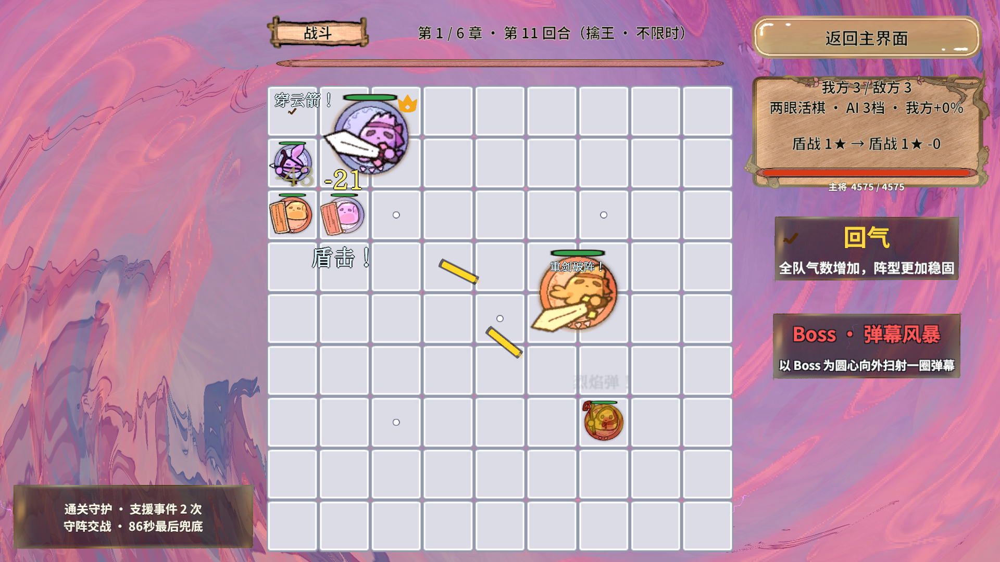
收尾已确认：Home、IsTransitioning=false、ActiveBossFxCount=0；临时事件监听、计时器与 GM 已注销，编辑器恢复非 Play。本轮没有提交或推送。
Unity 2022.3.15f1c1，StartScene → Boss 开发夹具。自动化逐一执行技能 0–8；每招均等待 RevGame/Boss查询 = idle 再进入下一招。最终步骤关闭我方无敌，等待后再次断言 Boss 回到 idle；随后 teardown 返回主界面。
ff8c6a9256044795a5450af28e0239ccsuccess=true · completed/requested=1/1 · failedIterations=00 · 自动化错误列表为空Revolution.Automation/results/boss-all-skills-2026-10-21/scenario.json| 编号 | 技能 | 合法目标布置 | 自动化可确认结果 |
|---|---|---|---|
| 0 | 横扫 Cleave | 清卫后安排贴身我方棋子 | 技能命令成功；随后状态回到 Idle；2 张固定帧截图 |
| 1 | 狙击 Snipe | 安排远距目标 | 技能命令成功；随后状态回到 Idle；2 张固定帧截图 |
| 2 | 轰炸 Bombard | 安排有效范围内目标 | 技能命令成功；随后状态回到 Idle；2 张固定帧截图 |
| 3 | 弹幕 BulletRing | 安排 Boss 光环范围内我方棋子 | 技能命令成功；随后状态回到 Idle；2 张固定帧截图 |
| 4 | 瞬移 BlinkBlast | 布置可计划的落点与范围目标 | 技能命令成功；随后状态回到 Idle；2 张固定帧截图 |
| 5 | 激光 LaserSpin | 安排有效范围内目标 | 技能命令成功；随后状态回到 Idle；2 张固定帧截图 |
| 6 | 汲取 SoulDrain | Boss 清卫后压至 80% 血，满足汲取条件 | 技能命令成功；随后状态回到 Idle；2 张固定帧截图 |
| 7 | 召唤 Summon | 清卫腾出部署空间 | 技能命令成功；随后状态回到 Idle；2 张固定帧截图 |
| 8 | 狂暴 Enrage | 存活 Boss 直接触发测试状态 | 技能命令成功；随后状态回到 Idle；2 张固定帧截图 |
本轮 Automation 墙钟耗时
编辑器运行平均帧时间
编辑器运行 P95
最大帧时间 106.70 ms；GC0/GC1/GC2 各 1 次。性能阈值为 0（关闭），因此这里只记录采样，不构成性能门槛通过。测试验收的是九条真实 GM 技能命令均被接受且状态机逐招收招；本场景没有订阅并断言每个 BossSkillTelegraph/BossSkillCast/DamagePiece 事件的精确次数和数值，因此不要把它解读为段数/伤害统计专项通过。
图片由 Unity Play 内的受控 GM 使用 ScreenCapture.CaptureScreenshot 保存到报告附件目录。点击查看原图。

SAMPLE A点击放大 ↗
SAMPLE B点击放大 ↗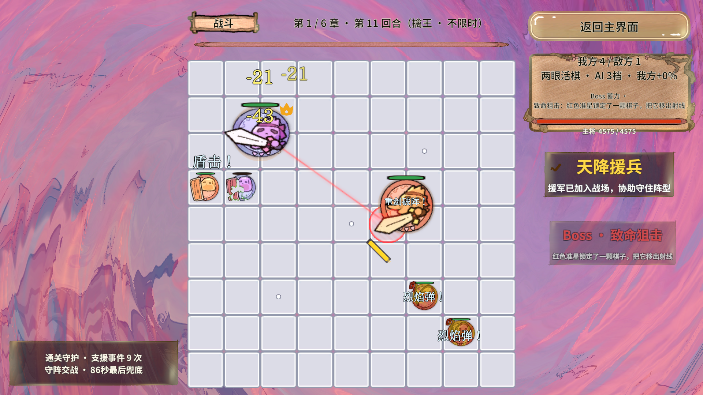
SAMPLE A点击放大 ↗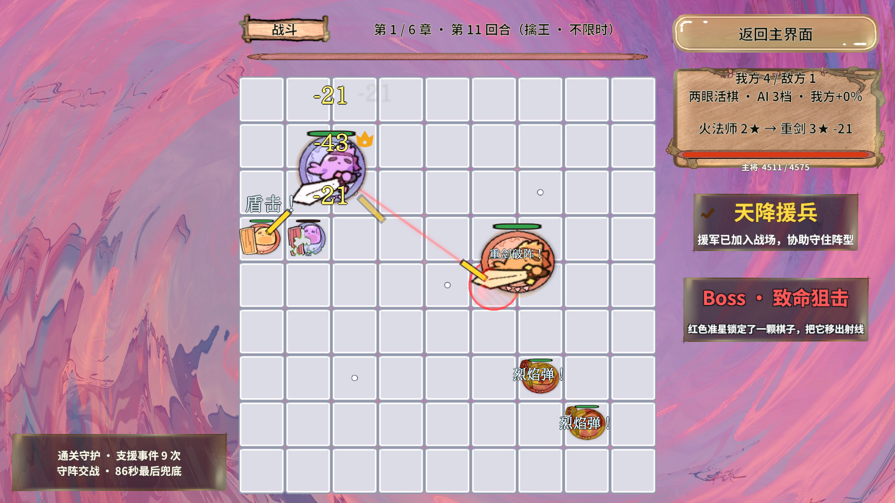
SAMPLE B点击放大 ↗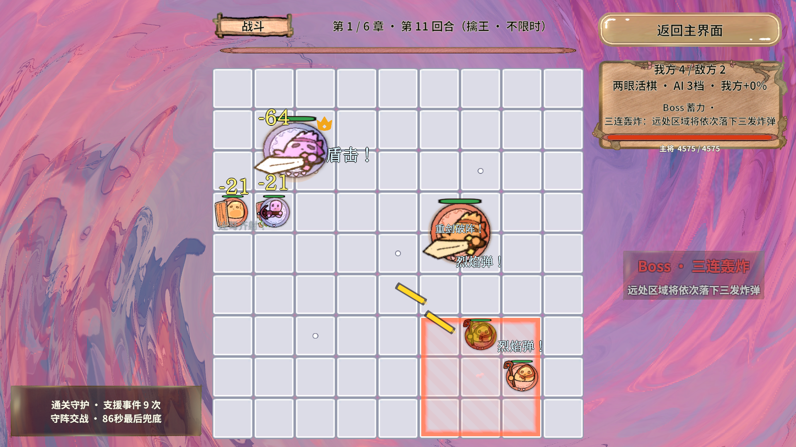
SAMPLE A点击放大 ↗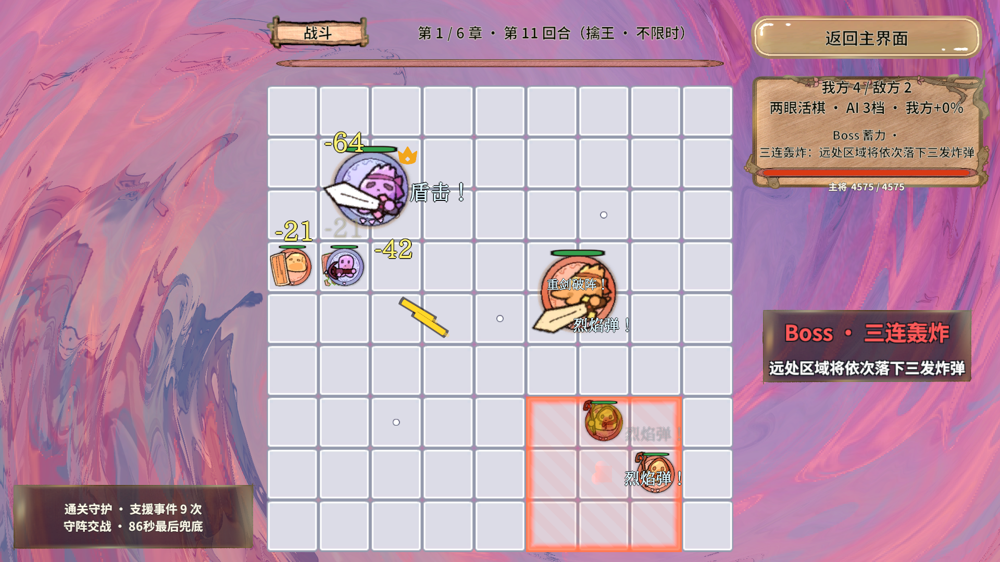
SAMPLE B点击放大 ↗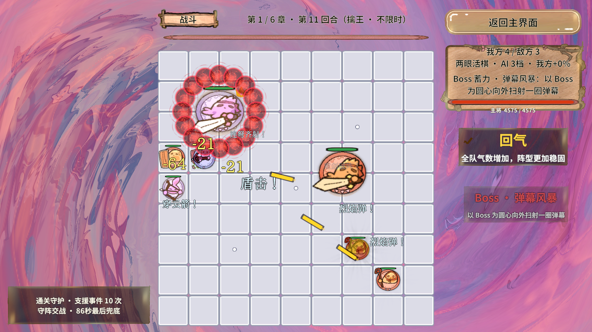
SAMPLE A点击放大 ↗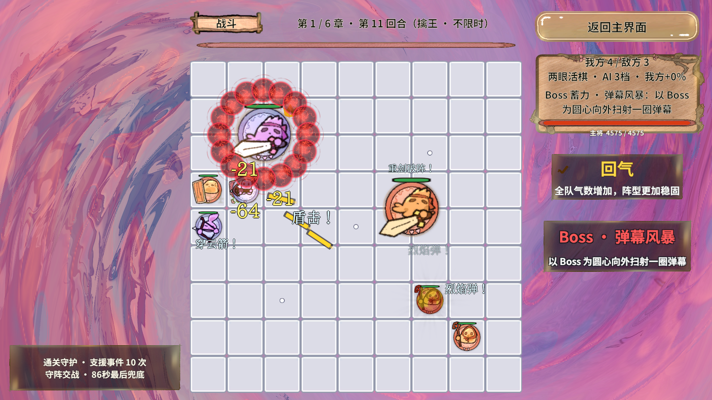
SAMPLE B点击放大 ↗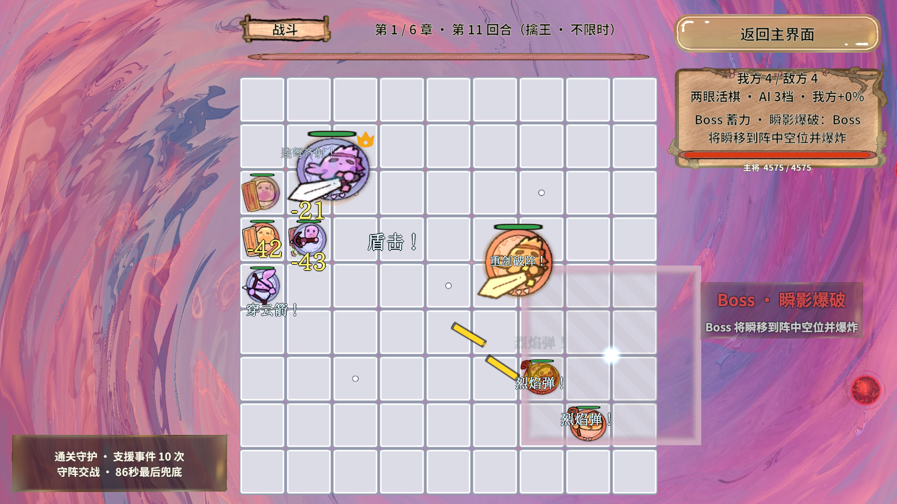
SAMPLE A点击放大 ↗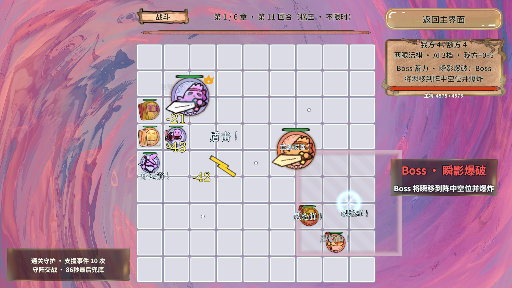
SAMPLE B点击放大 ↗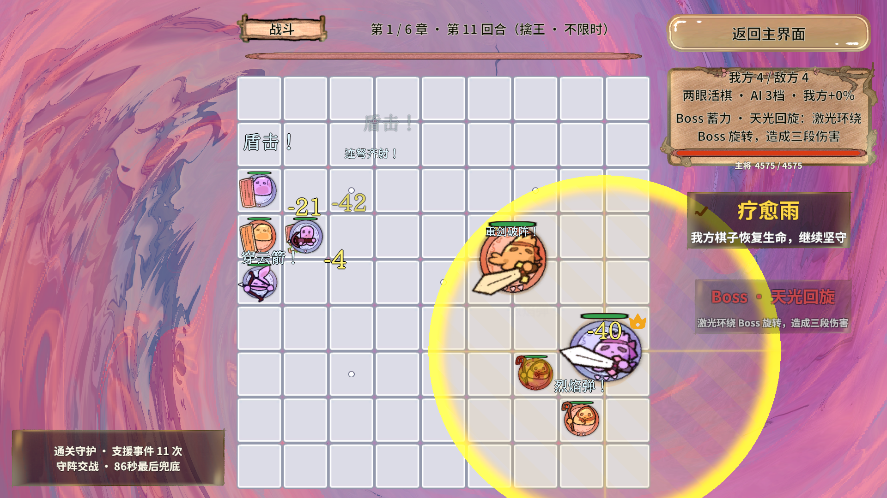
SAMPLE A点击放大 ↗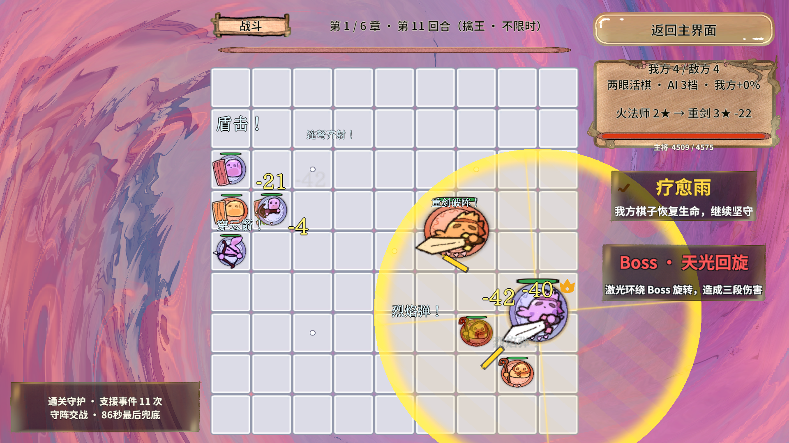
SAMPLE B点击放大 ↗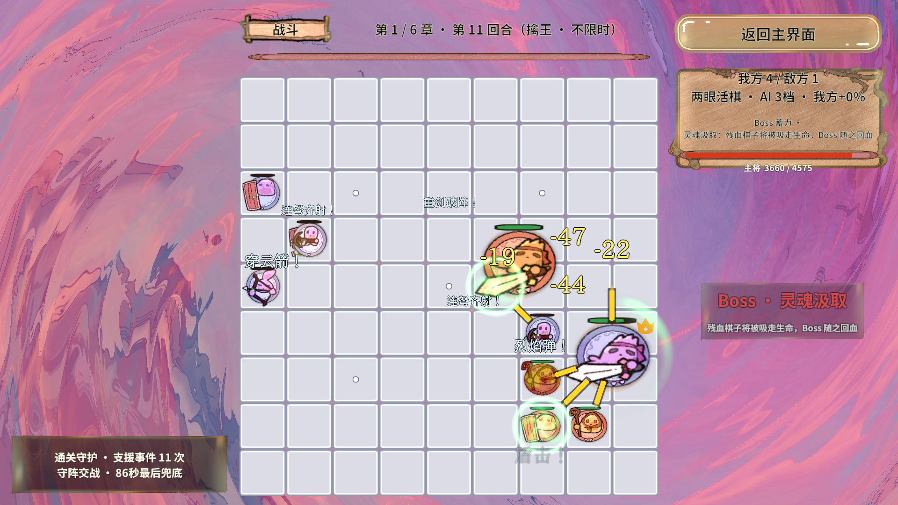
SAMPLE A点击放大 ↗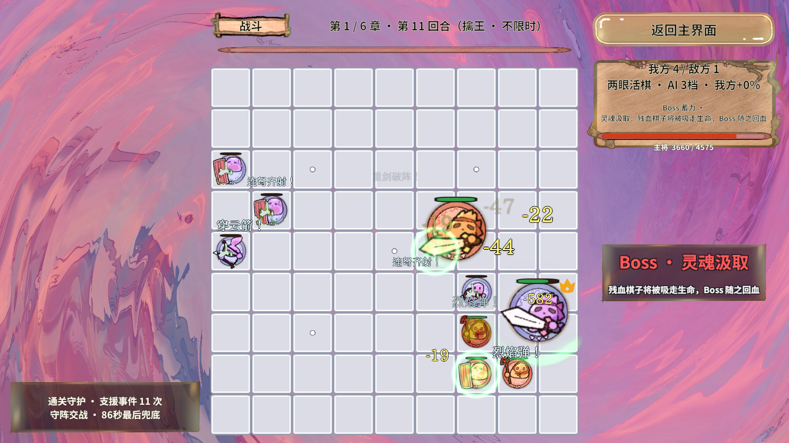
SAMPLE B点击放大 ↗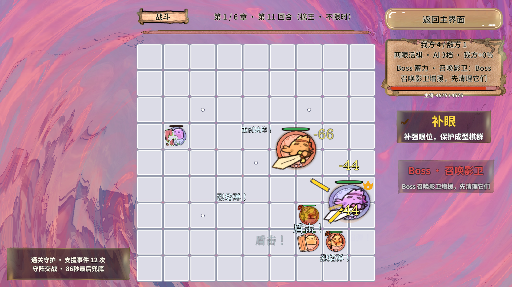
SAMPLE A点击放大 ↗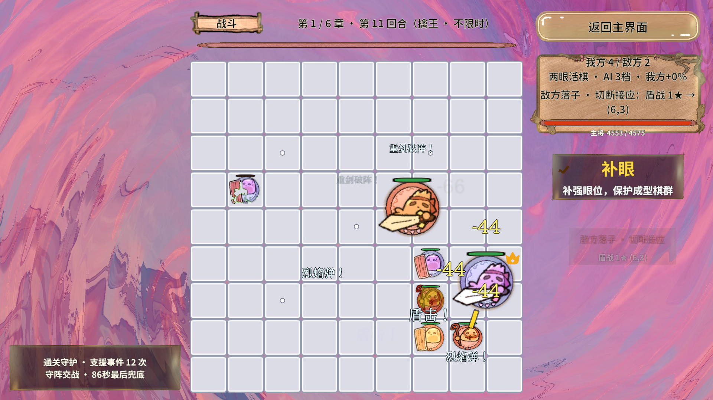
SAMPLE B点击放大 ↗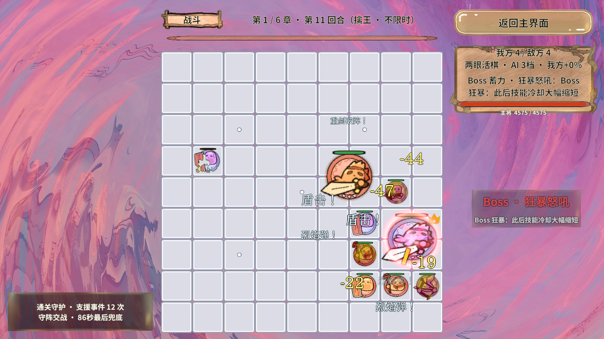
SAMPLE A点击放大 ↗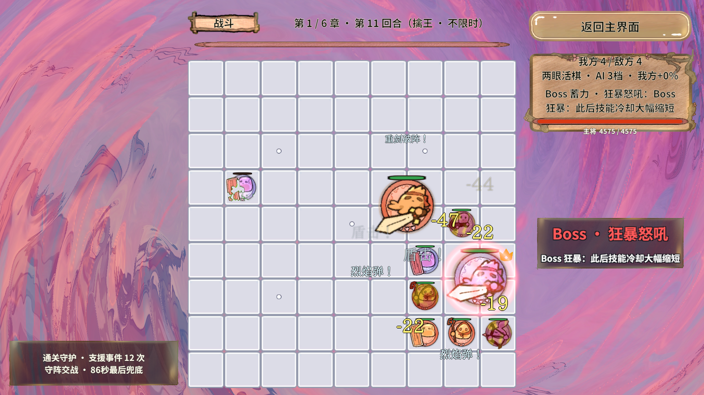
SAMPLE B点击放大 ↗依据同目录《BossAI 自动化测试说明》执行。先跑原版场景与离线回归，再用仅存在于本次 Play 内存中的临时 GM 夹具，独立验证技能事件、施放时序和特效回池。用户要求开始整理报告时，专项补测已完成技能 0、1、2。
examples/boss-ai.scenario.json · repeat=1 · warmup=0174a198c1e28e44d133a73f17bbaec33177e5614Time.timeScale=1。独立夹具先加载 boss 开发场景、发放准备增益并开战，清除护卫，再通过公开 BoardModel.Move 设置测试位置。随机准备增益仍可能额外生成棋子或护盾，图片中的短暂溶解残影来自清卫；专项记录按真实技能事件核对，不将普通攻击混算为技能伤害。
181 个场景 / 4,167 条断言通过，进程退出码 0。输出另有 CS0414 未使用字段警告；该警告未使回归失败。离线测试覆盖规则，不替代 Unity 动画与 UI 验收。
1 / 1 次执行完成，失败 1 次；在 steps[28] 强制施放 SoulDrain 时停止。技能 0–5 的原版步骤已越过各自的 idle 等待；7、8 因 stopOnFailure 未执行到。
| 技能 | 原版流程记录 | 独立事件 / 回收断言 | 截图与尚缺证据 |
|---|---|---|---|
| 0 · 横扫 | 施放并等待 idle | 通过 1 次预警 / 1 段命中 / 1 条技能伤害；Idle，FX=0 | 预警、命中各 1 张；预警帧未捕获 HUD，完整动画与遮挡仍需复核。 |
| 1 · 狙击 | 施放并等待 idle | 通过 1 次预警 / 1 段命中 / 1 条技能伤害；Idle，FX=0 | 预警、命中各 1 张；本次未执行 Play 躲避狙击专项。 |
| 2 · 轰炸 | 施放并等待 idle | 通过 1 次预警 / 3 段命中 / 3 条技能伤害；Idle，FX=0 | 预警、首段命中各 1 张；三发连续画面与边缘危险区仍需复核。 |
| 3 · 弹幕 | 施放并等待 idle | 未通过 · 缺专项验收 | 缺预警 / 命中图及“同一目标只扣一次血”的 Play 事件断言。 |
| 4 · 瞬移 | 施放并等待 idle | 未通过 · 缺专项验收 | 缺截图、占格与事件落点一致的 Play 专项；堵落点反制未执行。 |
| 5 · 激光 | 施放并等待 idle | 未通过 · 缺专项验收 | 缺截图及三段伤害的 Play 专项记录。 |
| 6 · 汲取 | steps[28] 无合法目标 | 未通过 · 前置受阻 | 受伤 Boss 的独立补测尚未执行，无回血与视觉验收结论。 |
| 7 · 召唤 | 未执行到 | 未通过 · 尚未执行 | 缺敌棋增量、小兵独立状态机与截图证据。 |
| 8 · 狂暴 | 未执行到 | 未通过 · 尚未执行 | 缺 Enraged=true、后续冷却、仅触发一次与截图证据。 |
52a954851ea444acb476703c641f347dsuccess=false · cancelled=falsecompleted/requested = 1/1 · failedIterations=1unityErrors=01/1 表示执行完成，并不表示测试通过。
errors[0]:
steps[28]: RevGame/Boss技能 6: SoulDrain 当前没有合法目标该任务未生成 unity-errors.jsonl，与结果中的 Unity Error 计数 0 一致，因此没有错误日志摘录可展示。失败原因来自自动化步骤返回的业务异常；报告完整保留了场景错误与迭代记录。
{
"name": "Boss AI 九技能自动化验收",
"resultPath": "RevGame_Client\\UnityProject\\RevGame.Unity\\Library\\RevolutionAutomation\\jobs\\52a954851ea444acb476703c641f347d\\scenario-result.json",
"startedUtc": "2026-10-20T09:01:41.2404035+00:00",
"finishedUtc": "2026-10-20T09:01:57.3250949+00:00",
"unityVersion": "2022.3.15f1c1",
"environment": "Unity Editor PlayMode",
"unityLogPath": "RevGame_Client\\UnityProject\\RevGame.Unity\\Library\\RevolutionAutomation\\jobs\\52a954851ea444acb476703c641f347d\\unity-errors.jsonl",
"requested": 1,
"completed": 1,
"failedIterations": 1,
"warmupCompleted": 0,
"success": false,
"cancelled": false,
"elapsedSeconds": 16.0845769,
"frameSamples": 4283,
"frameMeanMs": 3.023109104658929,
"frameP95Ms": 4.4,
"frameMaxMs": 22.580299526453018,
"peakMonoUsedBytes": 748965888,
"peakAllocatedMemoryBytes": 610760022,
"unityErrors": 0,
"errors": [
"steps[28]: RevGame/Boss技能 6: SoulDrain 当前没有合法目标"
]
}原版场景每次施放前执行 RevGame/Boss续航，把 Boss 回满血。BossTactics.TryPlan 在 Boss 生命比例 ≥ 90% 时拒绝 SoulDrain，因此随后的 Boss技能 6 无法得到合法计划。
// BossTactics.cs:226
if (boss.HpRatio >= 0.9f || board.GetPiecesOf(GameSide.Player).Count == 0)
{
return false;
}影响：当前九技能场景不能满足自身的通过标准。建议：为汲取提供受伤 Boss 的专用测试输入，再核对命中前后回血；保持真实技能的合法性判断。本轮没有修改该场景或技能逻辑。
GameGmCommands.cs:162 使用 args.Int(1, 1) 读取距离。参数下标从 0 开始，因此只传一个参数时，Boss靠近 2 会忽略 2，落到默认距离 1。
// 当前：读取第二个参数，没有时使用默认值 1
int distance = args.Int(1, 1);
// 建议修复方向：读取第一个参数
int distance = args.Int(0, 1);影响：原版狙击、轰炸等距离测试并未可靠使用文档指定的距离；即使该步骤通过，也可能选中了另一颗较远棋子。独立补测通过 BoardModel 的公开移动方法设置位置，避免依赖这个 GM 参数。本轮没有修改该接口。
下列六张图片来自真实 Unity Play。为可靠取证，在预警中间与首段命中效果出现后暂停游戏时间，保存画面后再恢复运行至 Idle。点击图片可查看原尺寸。
| 技能 | 配置蓄力 | 事件间隔 | 技能伤害事件 | 收尾 |
|---|---|---|---|---|
| 横扫 | 1.00 s | 1.250 s | 1 条 / 25 | Idle · ActiveBossFxCount=0 |
| 狙击 | 1.40 s | 1.563 s | 1 条 / 43 | Idle · ActiveBossFxCount=0 |
| 轰炸 | 1.20 s | 1.250 s | 3 条 / 每条 22 | Idle · ActiveBossFxCount=0 |
事件间隔由 BattleElapsed 记录，受固定仿真步长量化；本轮未观察到早于配置蓄力时间命中的情况。伤害列是 Boss 发出的技能伤害事件值；生命变化还可能受护盾、普通攻击和准备增益影响，不能把任意两帧的 HP 差直接当作技能伤害。
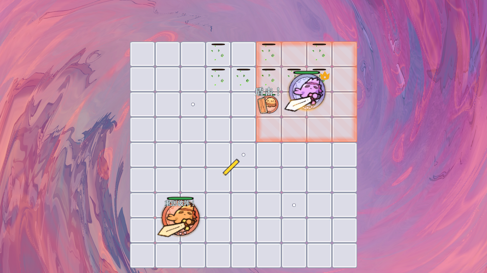
TELEGRAPH点击放大 ↗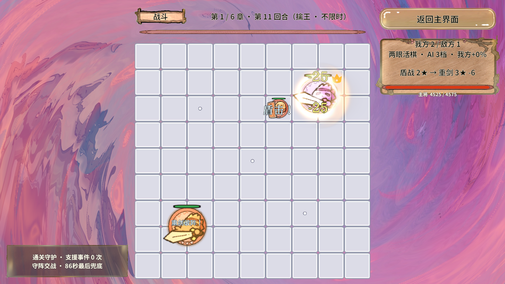
IMPACT点击放大 ↗预警帧可见 Boss 身周方形危险区；命中帧可见亮色环形效果与飘字。预警截帧未捕获 HUD，不能据此验收 HUD 遮挡。
skill=0;phase=done;counter=False;telegraphs=1;casts=1;skillHits=1;hpBefore=4575;hpBeforeImpact=4550;hpAfterImpact=4525;targetBefore=240;targetAfter=240;enemiesBefore=1;enemiesAfter=2;enemiesBeforeImpact=1;enemiesAfterImpact=1;latency=1.250;activeFx=0;state=Idle;error=
telegraph:Cleave;A=(6,6);B=(6,6);C=(6,6);windup=1
damage:target=150;amount=25
cast:Cleave;index=0;count=1;origin=(6,6);A=(6,6);enraged=False
敌方指挥：Deploy
Boss #140 Idle · 1.25秒 · Cleave 收招
#151 Attack · 0.94秒 · 发现合法攻击目标
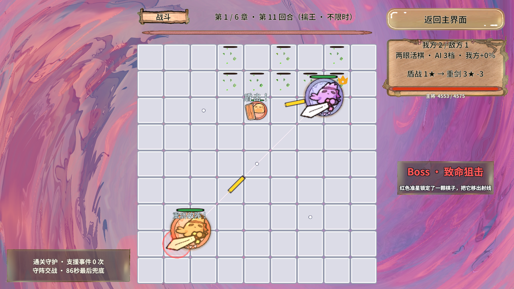
TELEGRAPH点击放大 ↗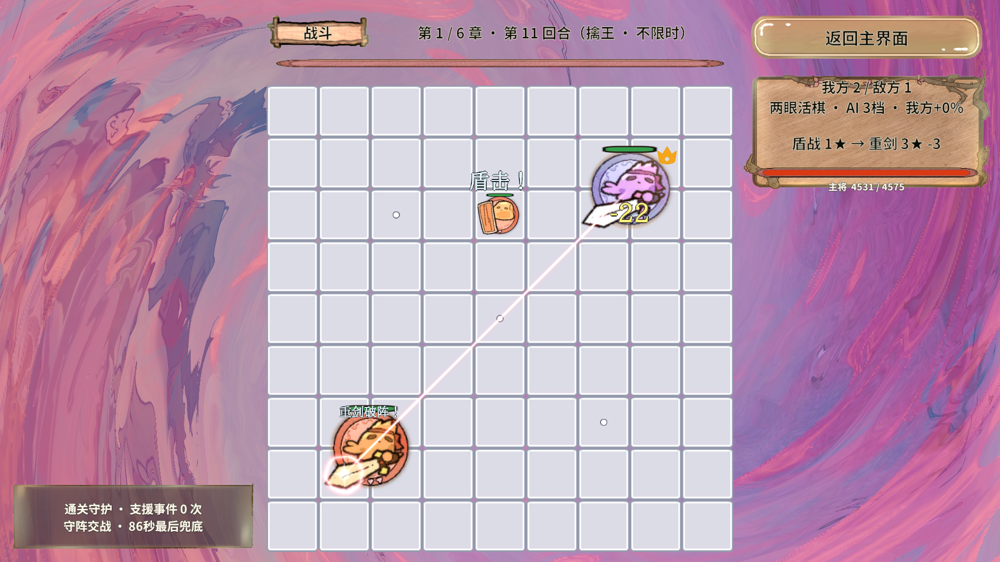
IMPACT点击放大 ↗预警可见锁定格的红色准星与瞄准细线；命中可见光束及目标处亮光。真实技能伤害事件为 43；本次未执行移开目标的专项反制。
skill=1;phase=done;counter=False;telegraphs=1;casts=1;skillHits=1;hpBefore=4575;hpBeforeImpact=4553;hpAfterImpact=4531;targetBefore=120;targetAfter=120;enemiesBefore=1;enemiesAfter=2;enemiesBeforeImpact=1;enemiesAfterImpact=1;latency=1.563;activeFx=0;state=Idle;error=
telegraph:Snipe;A=(1,1);B=(6,6);C=(6,6);windup=1.4
damage:target=162;amount=43
cast:Snipe;index=0;count=1;origin=(6,6);A=(1,1);enraged=False
敌方指挥：Deploy
Boss #153 Idle · 1.25秒 · Snipe 收招
#164 Attack · 1.25秒 · 发现合法攻击目标
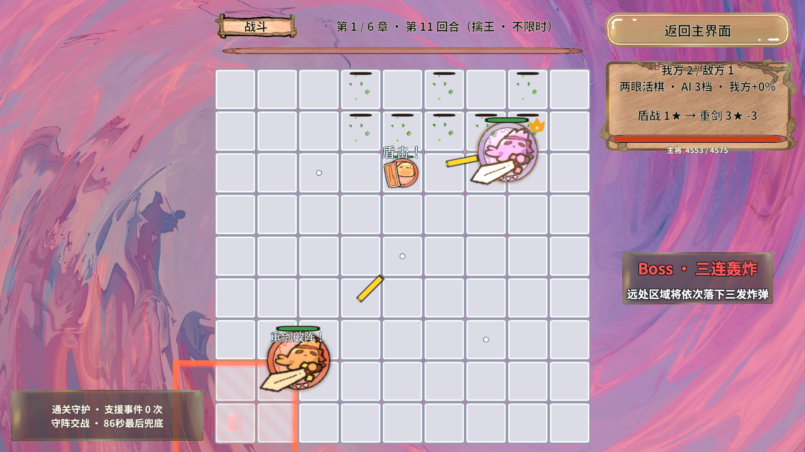
TELEGRAPH点击放大 ↗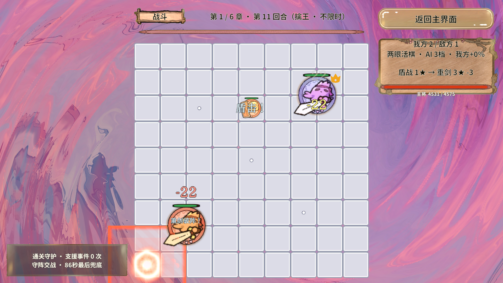
IMPACT点击放大 ↗预警可见棋盘左下区域标记；命中可见首发落点亮光及 −22 飘字。三段均有事件记录；边缘落点的完整危险区可读性仍需连续画面复核。
skill=2;phase=done;counter=False;telegraphs=1;casts=3;skillHits=3;hpBefore=4575;hpBeforeImpact=4553;hpAfterImpact=4531;targetBefore=120;targetAfter=120;enemiesBefore=1;enemiesAfter=2;enemiesBeforeImpact=1;enemiesAfterImpact=1;latency=1.250;activeFx=0;state=Idle;error=
telegraph:Bombard;A=(0,0);B=(1,1);C=(1,0);windup=1.2
damage:target=175;amount=22
cast:Bombard;index=0;count=3;origin=(6,6);A=(0,0);enraged=False
damage:target=175;amount=22
cast:Bombard;index=1;count=3;origin=(6,6);A=(0,0);enraged=False
damage:target=175;amount=22
cast:Bombard;index=2;count=3;origin=(6,6);A=(0,0);enraged=False
敌方指挥：Deploy
Boss #166 Idle · 0.63秒 · Bombard 收招
#177 Attack · 1.25秒 · 发现合法攻击目标
平均帧时间
P95 帧时间
最大帧时间
以上来自原版场景的 4,283 个帧样本；原版场景在汲取处失败，未覆盖召唤和狂暴。统计期间发生过 GC：迭代记录中的 gc0=1、gc1=1、gc2=1，不支持“零 GC”结论。
独立补测加入事件采集并反复冻结时间，其帧时间不纳入自然运行性能结论。原版配置的 maxFrameP95Ms / maxFrameMs / maxMonoUsedBytes 均为 0，未启用性能阈值，因此这些数值不等于通过性能门槛。未执行 20 次高压循环、真机帧率、GPU 合批或内存泄漏专项。
附件目录与 HTML 同级，包含六张原始 PNG、原版场景 summary / iteration 记录、全部专项结果及自动化调用轨迹、离线回归输出。图片使用 SHA-256 记录来源校验，报告移动或拉取后仍可查看。
# 工作目录：RevGame_Client/UnityProject
# 需先打开本工程，按测试说明完成刷新、编译和进入 Play。
python -X utf8 Revolution.Automation/rev.py --project RevGame.Unity --mode live --timeout 600 scenario run Revolution.Automation/examples/boss-ai.scenario.json --report-dir Revolution.Automation/results/boss-ai-new-run
# 工作目录：仓库根目录
dotnet run --project RevGame_Client/Tests/CombatAttackRegression/CombatAttackRegression.csproj -c Release --no-restore原始 Unity 任务：Library/RevolutionAutomation/jobs/52a954851ea444acb476703c641f347d。运行缓存留在本机；本次只提交进度同步目录下的报告与选定证据附件，不修改玩法、框架或测试场景源码。
构建于 2026-10-20 17:29（北京时间）。测试基线固定为 174a198；后续代码变化不自动更新本报告结论。